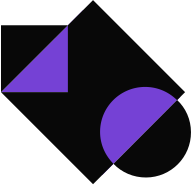

LABHacker
LABHacker?
LABHacker is the civic innovation laboratory of the Brazilian Parliament and focuses on three themes: transparency, participation and citizenship, fostering collaborative and experimental projects. The Lab also has the objective of articulating a network of representatives, public servants, civic hackers and civil society organizations which contribute to a culture of transparency and social participation through public data management.
Our lines of action
Citizen participation

The LABHacker encourages the development of actions and tools which amplify social participation in the legislative process. We manage the e-Democracia Portal of the Brazilian Parliament, which showcases multiple participation models, such as interacting in public hearings, collaborative editing of law proposals and thematic debates.Other government bodies and outside entities are also able to run their own version of the e-Democracia platform.
Transparency

We incentivize the development of digital applications that allow for intuitive and simplified visualization of legislative information. We produce open-source tools and release them on Github for use by other public bodies. We collaboratively implemented the Parlamento Aberto Portal, inspiring other legislative houses in transparency, participation, and social control. In 2018, we aim at enhancing citizen comprehension in legislative votings with innovative experiences in the plenary's backstage.
Experimentation
The LABHacker is an space of freedom for experimenting and learning where making mistakes is allowed in search for innovation and for thinking outside the box. We perform usability tests for products and services, always with citizens' best interest at heart. We also experiment with tools and debate the use of new technologies to disseminate best practices.
Collaboration
The LABHacker works colaborativelly with a network of developers and civic activists, in order to both enhance our own projects as well as amplifying social participation and transparency in the legislative. Collaborative work happens at multiple levels such as at the initial planning of activities, the exchange of information and expertise and the facilitation of processes to increase transparency and participation.
Inspiration

We also host events and activities with specialists and inspiring guests seeking to trade the culture of bureaucracy and comfort zone for innovation in the public sector, disseminate cases of success in various areas, and talk about citizenship and technology for various audiences.
Send suggestions, constructive criticism or ideas for us to implement üòâ
labhacker@camara.leg.brThe LABHacker is an innitiative of the Brazilian Chamber of Deputies
Who we are
 Walternor Brandão üöì
Director - FC-03
Walternor Brandão üöì
Director - FC-03
Walternor is a Legislative Analyst at the Chamber of Deputies and Master of Legislative Power by CEFOR - Chamber of Deputies. Currently, he is the Manager of the e-Democracy Portal of the Chamber of Deputies, collaborating for the development of technologies for popular participation and public transparency.
Simone Ravazzolli üêæ
Gestora de comunicação e planejamento - FC-01
Simone has been a Legislative Analyst at the Chamber of Deputies since 1998, where she develops activities in the areas of communication, with an emphasis on digital journalism, social networks, analysis of audience measurement data, and multiplatform content. She worked on the creation of the Coordination of Popular Participation, the Secom area of the Brazilian Parliament responsible for collecting data on social participation. She holds a Masters from UnB, an MBA in Strategic and Competitive Communication in Organizations from the Scientific Institute of Higher Education and Research, and Master in Digital Journalism from the International Institute of Social Sciences - IICS / SP and University of Navarra.
 Roberta Rabay ü¶ã
Inovadora digital - FC-01
Roberta Rabay ü¶ã
Inovadora digital - FC-01
Roberta was director of LABHacker from December 2017 to August 2018. She joined the Chamber of Deputies in 1999, she worked in the Information Technology area, where she worked in the development of portals, user experience, internal communication and people management. She graduated in Computer Science from UFPB and has an MBA in ICT Governance. She is listed among the 100 most influential people in Digital Government in the World in 2018 by Apolitical.
 Diego Cavalcanti Cunha ü•ï
Assessor para o Portal e-Democracia, Redator, Tradutor
Diego Cavalcanti Cunha ü•ï
Assessor para o Portal e-Democracia, Redator, Tradutor
Diego is a Legislative Analyst and public servant since 2007, having worked priorly at the Ministries of Culture and Foreign Affairs. He has a degree in Architecture and his work at LABHacker is varied, assisting in the management of e-Democracy, presentation at events and also in translations and research.
Ricardo Fernandes ü§¨
Analista Legislativo
Ricardo Fernandes Paixão is a professor at the Faculty of Law of the Universidade de Brasília, where he teaches courses on entrepreneurship and regulation of financial innovation (fintechs). He was a professor at USP and PROVAR / LABFIN at the Fundação Instituto de Administração. He holds a doctoral degree in administration from FEA USP, an MBA from INSEAD, and a master's degree in economic law from USP São Francisco. At LABHacker he works with a project to create an ecosystem of civic entrepreneurship.
Thiago Nogueira ☕️
Back-end developer
Thiago is a Software Engineer graduated from the Universidade de Brasília. He is deeply passionate about Python and works as a backend developer at LABHAcker. He likes to turn coffee into code, and believes that he can change the world through technology.
Erivânio Vasconcelos üí™
Back-end developer
Erivânio is a back-end developer at LABHacker. He is a graduate in Systems Analysis and Development from the Instituto Federal do Piauí (IFPI) and works at the Lab in the creation and maintenance of projects, as well as in the management of servers.
João Paulo N. Soares üèéÔ∏è
Front-end developer
João Paulo é desenvolvedor front-end do LABHacker e tem graduação em Engenharia de Software pela Universidade de Brasília. É apaixonado por tecnologia, automobilismo e gosta de saber sobre tudo um pouco.
T√©ogenes Moura üìö
Front-end developer
Teógenes (Teo) is a front-end developer at LabHacker. He is a graduate in Computer Engineering from the University of Brasília, where he has participated in initiatives related to politics and technology, working with research and development related to the intersection between both areas.
Samuel Fernandes ü™ê
Desenvolvedor e administrador de sistemas
Samuel Souza is a design major at Centro Universitário - UDF. He is passionate about games and music and acts as UX / UI Designer at LabHacker, turning a problem into possible solutions. His goal as a designer is to understand the user's needs and pains and to solve them in the best possible way.
Frederico Schmidt üé•
Chefe do serviço de inovação em cidadania, participação e transparência
Frederico Schmidt has been a member of the Brazilian Chamber of Deputies since 1998. He holds a degree in journalism, specializing in Digital TV (UCB-DF), and worked at TV Câmara for more than 20 years where he held various roles: editor, executive coordinator and director. He started working at Labhacker in July 2019 and acts as a project manager focused on participation, citizenship and transparency in the Chamber of Deputies.
 Taiane Jacobina üëú
Documentadora Operadora Micro Sênior
Taiane Jacobina üëú
Documentadora Operadora Micro Sênior
Tai works at LABHacker as an administrative assistant and supervisor of hacking activities. She is a law student, has a course in the area of coaching, intelligent relations and digital influence.
Louise Campos üí´
Communication Intern
Louise is an Organizational Communication student at the University of Brasília and an intern at LABHacker, where she works with planning, content and social networks. Her mind and heart orbit the world of the Moon, but she has grounded feet and likes to see her ideas blossom. She is passionate about popular culture, loves to dance and is enchanted by the possibility of building narratives together.
Our activities
Check out some examples of what we do here to help improve legislative transparency and social participation in Parliament:
Participation in interactive hearings
In addition to live-streaming the public hearings of the Chamber of Deputies' commissions, it is now also possible to send questions on the topic of debate through the "Audiências Interativas" tool (included in the e-Democracy portal), developed by LABHacker. The questions most voted by the citizens themselves are read and answered live during the event by the deputies or guests. The answers are tagged on the video and at any time it is possible to search the audience room to have access to the whole video, the questions asked and their answers. There is also a chat for interaction between users during the event.
 Collaborative project editing
Collaborative project editing
Wikilegis is an e-Democracy tool developed by LABHacker that allows citizens to actively participate in the construction of laws with representatives reporting on the projects. People interested in a certain topic can forward suggestions for changes in the text: article by article, make comments and supporting or rejecting the proposal in full or in part. Collective contributions are presented in an organized and structured manner, facilitating the analysis and possible incorporation of suggestions into the final law text by the deputy. Through this functionality, thousands of Internet users contributed to the drafting of laws such as the Civil Procedure Code, the "Marco Civil da Internet", the Statute of the Person with Disabilities, the Youth Statute, among others.
Inclusion of themes on the Chamber of Deputies' agenda
One of the tools of the e-Democracy Portal, the Participatory Agenda was developed in 2017 for citizens to be able to help in the elaboration of the agenda of discussions by choosing for analysis by the Plenary the proposals they think should take priority. The pilot project was carried out in September and had 7,585 participants, who voted for proposals in the areas of health, security and politics. The entire process was monitored and evaluated by specialists in social participation. The documenting of this work, including the evaluation of the participating citizens and information on the methodology used (D21), is available on the page.
Opening of Parliament
Laboratório Hacker, in partnership with legislative houses and civil society institutions coordinates the commitment 11 from the 3rd Brazilian Action Plan with OGP. As one of the milestones of this commitment the group built in a collaborative and open manner the Guide to an Open Parliament, to guide in a practical way the aspects of transparency, social participation and social control in Parliament. Other milestones of the commitment are the construction of the Portal Open Parliament - with standards, tools, training, Open Parliament guidelines and practices and the provision of e-Democracia as one of the platforms offered by the Interlegis program to spread the use of the tool to all legislative houses in the country.
 Analysis of political manifestations
Analysis of political manifestations
LABHacker works on the development of a platform that will facilitate the analysis of political manifestations. This collaborative repository called Babel will have information gathered from social networks, pronouncements, official publications, news, blogs and other entries. This will enable software and data analysts to cross-check this information and understand the position of any person or institution on political issues.
 Collaborative social media studies
Collaborative social media studies
LABHacker encourages the creation of multidisciplinary study groups with participants from various public bodies to deepen the debate and disseminate good practices on topics related to social media and network analysis. These studies are carried out every two weeks and broadcast live on Youtube, so that all interested parties can participate or have subsequent access to the debate.
Immersive transparency experiments
One of the new experiments of the LAB is the 360 degree project, in which the citizen can follow from within the plenary of the Chamber of Deputies the vote on some important proposal for society. LABHacker believes that projects like this are essential to increase the Parliament's transparency and facilitate society's understanding of the legislative process.
Debates
We host talks on challenging themes, such as new technologies and innovation in the public service to stimulate civil servants, employees, parliamentarians, civic hackers, students and other interested parties. The agenda for these debates is always published on all LABHacker social networks and the presentations are broadcast live on YouTube.
Dissemination of the culture of social participation
A Partnership between the Parliament, Senate and Interlegis in 2018 now allows the e-Democracy portal, which is a social participation platform developed by LABHacker to be distributed to Legislative Chambers and Assemblies across the country. The first municipality to use the platform for its citizens is Três Corações, in Minas Gerais.
In Brasília, the Legislative Chamber of the Federal District, Anvisa and Anac are already working with the platform . In April, the French Parliament reported its interest in e-Democracy. This technology transfer should pave the way for other countries to start using the social participation tool, which is free and modular.
Advice for the institutionalization of civic innovations
LABHacker started the debate for the creation of the People's Initiative Digital Bill ( PL 7574/17 ), which facilitates citizens' lives and social participation by allowing the petition of the population to be electronically forwarded and to receive proposals from popular initiatives. This debate, which included everything from the possibility of using Blockchain technology in the legislative process to checking citizens' data through the Superior Electoral Court (TSE) database and other technical issues, had the fundamental participation of consultants from the Chamber, parliamentarians and experts. Now the project is ready to be voted on by the Chamber of Deputies' Plenary.
Another proposition that was supported by LABHacker was PRC 217/2017 , which institutionalizes citizen participation and expands the transparency of the legislative process in the Chamber of Deputies.
Follow us
Provoke
Participate
We accept suggestions, constructive criticism and new ideas seeking development üòâ
labhacker@camara.leg.br